helper_source <- "R/mysun_helpers.R"
library(admvn)
source(helper_source)
dir.create("results", showWarnings = FALSE)SUN(2,2) Parameterization
This note uses the SUN(2,2) correlation-scale parameterization from admvn::make_sun22_params: a length-10 free parameter vector mapping to the sn dp list (xi, Omega, Delta, tau=0, Gamma). We use local log-quadratic estimation following Fan et al. (2011) to estimate each margin, transform the observed intervals to normal scores, estimate dependence, and reconstruct the joint density.
A general SUN is \(Y = U \mid V > 0\) with
\[ \begin{bmatrix} U \\ V \end{bmatrix} \sim \mathcal{N}\left( \begin{bmatrix} \xi \\ 0 \end{bmatrix}, \begin{bmatrix} \Omega & \Sigma_{uv} \\ \Sigma_{uv}^\top & \Sigma_{vv} \end{bmatrix} \right), \]
where \(U,V\in\mathbb{R}^2\) and \(\xi=(\xi_1,\xi_2)^\top\).
Free parameters (length 10)
Location. \(\xi_1,\xi_2\).
Observed-scale covariance. Marginal standard deviations \(\nu_j>0\) (\(\Omega_{jj}=\nu_j^2\)) and free correlation coordinate \(\omega_{12}\) for the latent correlation \(C_u\):
\[ \Omega = D_u C_u D_u, \qquad D_u=\operatorname{diag}(\nu). \]
Skew loadings \(L\). All four entries free on the correlation scale:
\[ L = \begin{bmatrix} L_{11} & L_{12} \\ L_{21} & L_{22} \end{bmatrix}. \]
(\(L=0\) recovers a Gaussian; small diagonal \(L\) is a mild skew start, as in admvn::make_sun22_start_from_normal.)
Residual correlation. Free \(\gamma_{12}\) parameterizes the residual correlation of \(V\), so that \(\Sigma_{vv}=M+R\) with \(M=L C_u L^\top\) and unit diagonal.
sn quantities. Writing \(\Sigma_{uv}=D_u C_u L^\top\),
\[ \Delta = C_u L^\top, \qquad \Gamma = \Sigma_{vv}, \qquad \tau=0. \]
Valid parameters need \(\operatorname{diag}(L C_u L^\top)<1\).
Parameter order (same names as admvn):
xi1, xi2,
nu1, nu2,
omega12,
L11, L12, L21, L22,
gamma12Box constraints. Package defaults from admvn::sun22_bounds(): diagonals of \(L\) in \([-1,1]\), off-diagonals in \([-0.5,0.5]\), \(\gamma_{12}\in[-5,5]\), \(\nu_j\ge 10^{-6}\).
Setup and simulation
# Keep the generating parameters separate from the later fitted parameters.
## SUN(2,2) with stronger skewness and tail dependence
my_params <- c(
xi1 = 0, xi2 = 0,
nu1 = 1, nu2 = 1,
omega12 = 0.5,
L11 = 0.75, L12 = 0.05,
L21 = 0.05, L22 = 0.75,
gamma12 = 0.9
)
my_sun_params <- admvn::make_sun22_params(my_params)
set.seed(0)
ysim <- sn::rsun(4000, dp = my_sun_params)
ysim2 <- ysimplot(ysim2, cex = 0.6, pch = 16, col = "#00000020",
xlab = expression(Y[1]), ylab = expression(Y[2]))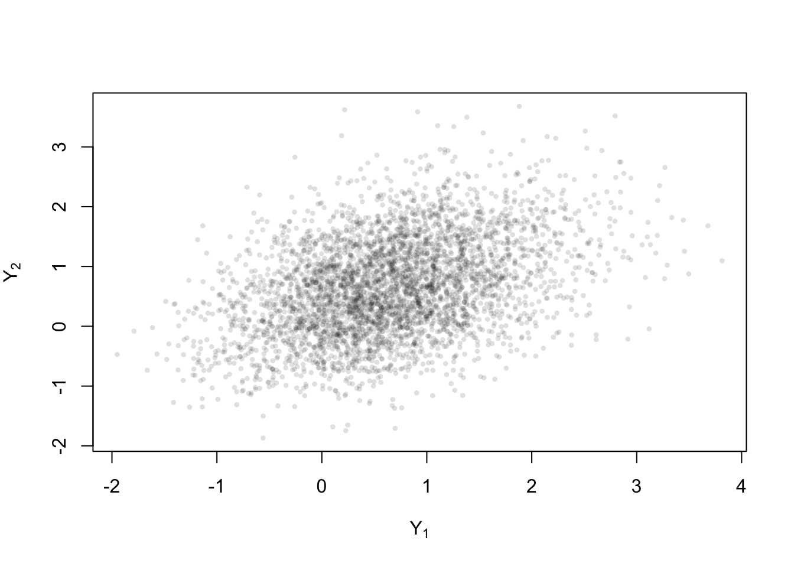
Censoring cases
All cases use the same 4,000 latent observations. Independent left and right exponential offsets have mean equal to the sample standard deviation of their margin, multiplied by the width scale below. The \(Y_2\) width scale is half the \(Y_1\) scale in every case. Endpoints are rounded outward. Seed 20260626 pairs the offset draws across cases.
| Censoring | \(Y_1\) half-width scale | \(Y_2\) half-width scale | Marginal endpoint spacing | Dependence endpoint spacing |
|---|---|---|---|---|
| Heavy | 1 | 0.5 | 0.1 | 0.1 |
| Intermediate | 0.5 | 0.25 | 0.1 | 0.1 |
| Light | 0.25 | 0.125 | 0.05 | 0.05 |
The Fan analysis compares heavy, intermediate, and light censoring. Within each case, the marginal and dependence fits start from the same observed intervals. These spacings are on the original data scale. Transformed endpoints are rounded separately on the normal-score scale. Latent values and true SUN parameters provide simulation and reference densities; bandwidth pilots and fits use the observed intervals.
# Generate one heavy-censoring dataset for both marginal and dependence fits.
# Round endpoints outward to spacing 0.1 on the original data scale.
censored_Y <- simulate_exponential_interval_censoring(
ysim2,
seed = 20260626,
round = 0.1,
width_scale = c(1, 0.5)
)# Reuse exactly the same observed intervals for dependence.
censored_Y_biv <- censored_Ycensored_Y_light <- simulate_exponential_interval_censoring(
ysim2,
seed = 20260626,
round = 0.05,
width_scale = c(0.25, 0.125)
)
# Marginal and dependence fits share the same full light-censoring sample.
censored_Y_light_biv <- censored_Y_light
rbind(
heavy = colMeans(censored_Y_biv$right - censored_Y_biv$left),
light = colMeans(censored_Y_light_biv$right - censored_Y_light_biv$left)
) [,1] [,2]
heavy 1.7159250 0.917625
light 0.4534625 0.254200Estimation framework
The marginal fits use Gaussian kernels. The bivariate Gaussian kernel has covariance
\[ \Sigma_K= \begin{pmatrix} \sigma_1^2 & \rho\sigma_1\sigma_2\\ \rho\sigma_1\sigma_2 & \sigma_2^2 \end{pmatrix},\qquad K_{\Sigma_K}(t_1,t_2) =\frac{\exp\{-\tfrac12(t_1,t_2)\Sigma_K^{-1}(t_1,t_2)^\top\}} {2\pi\sqrt{\det\Sigma_K}}. \]
The code stores the kernel standard deviations as h = c(sigma1, sigma2). This report fixes \(\rho=0\) and sets \(\sigma_1=\sigma\), \(\sigma_2=r\sigma\), where \(r=h_{0,2}/h_{0,1}\) is the ratio of the normal-score pilots obtained using the fitted marginal distributions. Thus
\[ \Sigma_K= \begin{pmatrix} \sigma^2 & 0\\ 0 & r^2\sigma^2 \end{pmatrix},\qquad \sigma>0,\quad r>0. \]
Both scales are the same multiple of their respective normal-score pilot bandwidths, so the bandwidth ratio remains fixed throughout CV. The product Gaussian kernel still smooths a joint density and permits dependence in the fitted copula. Here \(\phi\) and \(\Phi\) denote the standard-normal density and CDF.
The report uses independent = TRUE, same_h = FALSE, fixed_ratio = TRUE, and rho = 0. With use_cv = FALSE, each direction uses its own normal-score pilot bandwidth. Every fit uses maxit = 200 and tol = 1e-6; reaching the limit without convergence produces a warning in the rendered report.
Normal scores and joint reconstruction
For each observed interval \([L_{ij},R_{ij}]\), \(i=1,\ldots,n\), \(j=1,2\), the fitted marginal CDF \(\widehat F_j\) gives
\[ Z_{ij}^L=\Phi^{-1}\{\widehat F_j(L_{ij})\},\qquad Z_{ij}^R=\Phi^{-1}\{\widehat F_j(R_{ij})\}. \]
CDF values are clipped to \([10^{-6},1-10^{-6}]\), then transformed endpoints are rounded outward with spacing \(0.2\). Each observation is a rectangle in two dimensions. The evaluation coordinates \(z_1,z_2\in\mathbb R\) are scalars; a transformed sample has dimension \(n\times2\). Marginal transformations remain fixed during the bivariate fit and any bandwidth search.
Write \(\widehat f_Z(z_1,z_2)\) for the fitted normal-score density. For \(u_1,u_2\in(0,1)\), its copula-scale representation is
\[ \widehat c(u_1,u_2) =\frac{\widehat f_Z\bigl(\Phi^{-1}(u_1),\Phi^{-1}(u_2)\bigr)} {\phi\bigl(\Phi^{-1}(u_1)\bigr)\phi\bigl(\Phi^{-1}(u_2)\bigr)}. \]
At original-scale coordinates \(y_1,y_2\), set \(z_j=\Phi^{-1}\{\widehat F_j(y_j)\}\), \(j=1,2\). The reconstructed density is
\[ \widehat f_Y(y_1,y_2) =\widehat f_Z(z_1,z_2) \frac{\widehat f_1(y_1)\widehat f_2(y_2)}{\phi(z_1)\phi(z_2)}. \]
The fitted normal-score density need not have exactly standard-normal margins. Consequently, this transformation alone does not enforce uniform copula margins or exact agreement between the reconstructed and separately fitted marginal densities.
Evaluation grids and true reference densities
The original-scale base grids each contain 121 points; Fan marginal curves use 501 plotting points over the same ranges. Normal-score plots use 57 points per axis on \([-3.5,3.5]\) for heavy and intermediate censoring, and 41 on \([-2.5,2.5]\) for light censoring. Copula plots use 41 points per axis on \([0.01,0.99]\). These are evaluation grids, distinct from the cells used for fitting. Highest-density-region (HDR) bands and contour percentages refer to the probability mass on each displayed grid.
grid1 <- seq(
min(ysim2[, 1]) - 0.5 * stats::sd(ysim2[, 1]),
max(ysim2[, 1]) + 0.5 * stats::sd(ysim2[, 1]),
length.out = 121
)
grid2 <- seq(
min(ysim2[, 2]) - 0.5 * stats::sd(ysim2[, 2]),
max(ysim2[, 2]) + 0.5 * stats::sd(ysim2[, 2]),
length.out = 121
)Let \(f_Y\) be the true SUN joint density, and \(F_j,f_j\) its marginal CDFs and densities. The true scores \(Z_j=\Phi^{-1}\{F_j(Y_j)\}\) have standard-normal margins, but need not be jointly Gaussian. At \((z_1,z_2)\), define the two corresponding scalar coordinates
\[ y_1=F_1^{-1}\{\Phi(z_1)\},\qquad y_2=F_2^{-1}\{\Phi(z_2)\}. \]
Since \(dy_j/dz_j=\phi(z_j)/f_j(y_j)\), the true reference is
\[ f_Z(z_1,z_2) =f_Y(y_1,y_2)\frac{\phi(z_1)\phi(z_2)}{f_1(y_1)f_2(y_2)}. \]
The following code uses analytical SUN densities, numerical integration, and inverse-CDF interpolation to compute this reference and the true copula density. The same true marginals apply to every censoring case.
sun_obj <- sn::makeSUNdistr(
dp = my_sun_params, name = "sun", compNames = c("Y1", "Y2")
)
marg_dp <- lapply(seq_len(2), function(j) {
sn::marginalSUNdistr(sun_obj, comp = j, name = paste0("Y", j))@dp
})
marg_dp_light <- marg_dp
margin_map <- lapply(marg_dp, function(dp) {
y <- seq(-8, 8, length.out = 4001)
f <- as.numeric(sn::dsun(matrix(y, ncol = 1), dp = dp))
f[!is.finite(f) | f < 0] <- 0
inc <- diff(y) * (head(f, -1) + tail(f, -1)) / 2
cdf <- c(0, cumsum(inc))
cdf <- cdf / max(cdf)
keep <- !duplicated(cdf)
list(
dens = stats::approxfun(y, f, rule = 2),
inv = stats::approxfun(cdf[keep], y[keep], rule = 2,
yleft = min(y), yright = max(y))
)
})
true_normal_density <- function(z_grid) {
zz <- expand.grid(z1 = z_grid, z2 = z_grid)
y1 <- margin_map[[1]]$inv(stats::pnorm(zz$z1))
y2 <- margin_map[[2]]$inv(stats::pnorm(zz$z2))
jac <- stats::dnorm(zz$z1) * stats::dnorm(zz$z2) /
pmax(margin_map[[1]]$dens(y1) * margin_map[[2]]$dens(y2), 1e-12)
matrix(as.numeric(sn::dsun(cbind(y1, y2), dp = my_sun_params)) * jac,
nrow = length(z_grid), ncol = length(z_grid))
}
true_copula_density <- function(u_grid) {
uu <- expand.grid(u1 = u_grid, u2 = u_grid)
y1 <- margin_map[[1]]$inv(uu$u1)
y2 <- margin_map[[2]]$inv(uu$u2)
density <- as.numeric(sn::dsun(cbind(y1, y2), dp = my_sun_params)) /
pmax(margin_map[[1]]$dens(y1) * margin_map[[2]]$dens(y2), 1e-12)
density[!is.finite(density) | density < 0] <- 0
matrix(density, nrow = length(u_grid), ncol = length(u_grid))
}
zg <- seq(-3.5, 3.5, length.out = 57)
zg_light <- seq(-2.5, 2.5, length.out = 41)
ug <- seq(0.01, 0.99, length.out = 41)
ug_light <- ug
true_z <- true_normal_density(zg)
true_z_light <- true_normal_density(zg_light)
true_c <- true_copula_density(ug)
true_c_light <- true_cLocal log-quadratic estimation following Fan et al. (2011)
The estimation follows four steps: estimate the two marginals, transform the censoring intervals to normal scores, estimate dependence there, and reconstruct the joint density. Each density fit uses a local log-quadratic extension of the local-likelihood framework in Fan, Stafford and Brown (2011). Gaussian kernels give an analytic local-likelihood solution. The marginal fits are separate one-dimensional models; they are not obtained by integrating a bivariate fit.
The three paired censoring cases use the settings in Censoring cases.
1. Estimate the marginal densities
For each margin \(j\), Fan’s local model is
\[ \lambda_j(u;\mathbf a,s) =\exp\{a_1+a_2(u-s)+a_3(u-s)^2\}. \]
For one margin, let \(R_i=[L_{ij},R_{ij}]\) be observation \(i\)’s censoring interval, \(Q_\ell\) a numerical partition cell with length \(|Q_\ell|\), and \(\mathcal I_{i\ell}=\mathbf1\{Q_\ell\subseteq R_i\}\). The cell probabilities \(\Lambda_\ell^{(r)}\) are initialized proportional to cell length. Their conditional allocation is
\[ M_\ell^{(r)}=\frac1n\sum_{i=1}^n \frac{\Lambda_\ell^{(r)}\mathcal I_{i\ell}} {\sum_m\Lambda_m^{(r)}\mathcal I_{im}},\qquad q^{(r)}(u)=\frac{M_\ell^{(r)}}{|Q_\ell|}\quad(u\in Q_\ell). \]
Fan et al.’s density-estimation expected local likelihood, equation (2.9), then fits the log-quadratic polynomial \(\mathcal P\) by maximizing
\[ \widetilde\ell_s(\mathbf a) =n\int K_h(u-s)q^{(r)}(u)\mathcal P(u-s;\mathbf a)\,du -n\int K_h(u-s)\exp\{\mathcal P(u-s;\mathbf a)\}\,du. \]
With a Gaussian kernel, let \(t=(u-s)/h\) and define the local kernel mass \(s_0=\int K_h(u-s)q^{(r)}(u)\,du\), weighted mean \(\mu\), and weighted variance \(v\) of \(t\). Matching these moments solves the three score equations and gives
\[ f_{j,\mathrm{raw}}(s)=\exp\{\widehat a_1(s)\} =\frac{s_0}{\sqrt v}\exp\left(-\frac{\mu^2}{2v}\right). \]
The final smooth marginal density is \(\widehat f_j=f_{j,\mathrm{raw}}/\int_{D_j}f_{j,\mathrm{raw}}\), normalized over its padded computational interval \(D_j\). Its CDF \(\widehat F_j\) is computed by integrating that same smooth density. Cells provide the numerical conditional-allocation approximation; the plotted density evaluates the fitted local intercept directly.
The midpoint pilot for margin \(j\) is \(h_{0j}=1.06\,\operatorname{sd}\{(L_{ij}+R_{ij})/2\}\,n^{-1/5}\). The switch below enables ten-fold CV with coarse multipliers \(0.5,1,2,3,4,5,8\) and ten refinement candidates within one unit of the coarse winner, bounded below by \(0.5\). The marginal figures show the final selected fit in red, the coarse-winner fit in dashed blue, and the analytical SUN marginal in black. Setting the switch to FALSE fits each margin once at \(h_{0j}\), with multiplier one and no refinement.
source("R/fan_local_em.R")
source("R/fan_gaussian.R")
source("R/fan_smooth.R")
source("R/fan_marginal.R")
source("R/fan_copula.R")
fan_eigen_setup_seconds <- unname(system.time(
fan_enable_eigen(cache_dir = "mysun_cache/rcpp")
)[["elapsed"]])
fan_use_cv <- TRUE# Half-width scales c(0.5, 0.25) lie between heavy c(1, 0.5) and light c(0.25, 0.125).
# Use the same observations and exponential draws for the paired comparison.
censored_Y_intermediate <- simulate_exponential_interval_censoring(
ysim2,
seed = 20260626,
round = 0.1,
width_scale = c(0.5, 0.25)
)
censored_Y_intermediate_biv <- censored_Y_intermediate
fan_interval_widths <- do.call(rbind, lapply(list(
Heavy = censored_Y,
Intermediate = censored_Y_intermediate,
Light = censored_Y_light
), function(data) colMeans(data$right - data$left)))
colnames(fan_interval_widths) <- c("Mean interval width Y1", "Mean interval width Y2")
knitr::kable(fan_interval_widths, digits = 4,
caption = "Mean original-scale marginal interval widths for the three paired Fan censoring cases.")| Mean interval width Y1 | Mean interval width Y2 | |
|---|---|---|
| Heavy | 1.7159 | 0.9176 |
| Intermediate | 0.9073 | 0.5097 |
| Light | 0.4535 | 0.2542 |
local({
interval_cases <- list(
Heavy = censored_Y,
Intermediate = censored_Y_intermediate,
Light = censored_Y_light
)
observation_ids <- seq_len(min(15L, nrow(ysim2)))
positions <- rev(seq_along(observation_ids))
case_colours <- c(Heavy = "#7662A3", Intermediate = "#CA7B24", Light = "#268681")
old_par <- par(mfrow = c(3, 2), mar = c(3.4, 4, 2.3, 1),
mgp = c(2.2, 0.6, 0), cex = 1)
for (case in names(interval_cases)) {
data <- interval_cases[[case]]
for (j in seq_len(2L)) {
left <- data$left[observation_ids, j]
right <- data$right[observation_ids, j]
plot(c(-2, 4), range(positions) + c(-0.7, 0.7),
type = "n", axes = FALSE, xlim = c(-2, 4), xaxs = "i",
xlab = bquote(Y[.(j)]), ylab = "Observation ID",
main = paste0(case, " censoring: Y", j), cex.main = 0.95)
abline(h = positions, col = "grey93", lwd = 0.8)
segments(left, positions, right, positions,
col = case_colours[case], lwd = 2)
segments(left, positions - 0.13, left, positions + 0.13,
col = case_colours[case], lwd = 1.2)
segments(right, positions - 0.13, right, positions + 0.13,
col = case_colours[case], lwd = 1.2)
points(ysim2[observation_ids, j], positions, pch = 16, cex = 0.65)
axis(1, cex.axis = 0.8)
axis(2, at = positions, labels = observation_ids,
las = 1, cex.axis = 0.65, tick = FALSE)
box(bty = "l", col = "grey65")
}
}
par(old_par)
})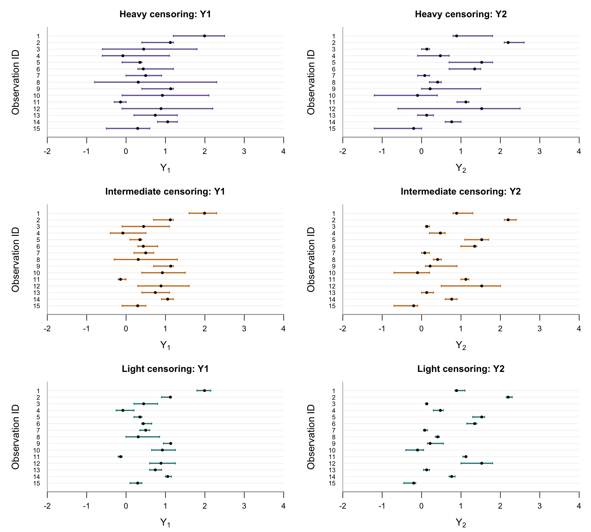
fan_marginal_data <- list(
Heavy = censored_Y,
Intermediate = censored_Y_intermediate,
Light = censored_Y_light
)
fan_marginal_fit_seconds <- unname(system.time(
fan_marginal_results <- lapply(fan_marginal_data, fit_fan_marginals,
n_folds = 10L, seed = 20260626L, maxit = 200L, tol = 1e-6,
timing = TRUE, use_cv = fan_use_cv)
)[["elapsed"]])fan_marginal_selection <- do.call(rbind, lapply(names(fan_marginal_results), function(case) {
result <- fan_marginal_results[[case]]
do.call(rbind, lapply(seq_len(2L), function(j) {
if (!fan_use_cv) return(data.frame(
censoring = case, margin = j, observations = result$n,
pilot_h = result$h0[j], multiplier = 1, fitted_h = result$fits[[j]]$h,
iterations = result$fits[[j]]$iterations,
converged = result$fits[[j]]$converged))
cv <- result$cv[[j]]
coarse <- result$coarse_best[[j]]
data.frame(censoring = case, margin = j, observations = result$n,
coarse_multiplier = coarse$multiplier, coarse_h = coarse$h,
final_multiplier = cv$best_multiplier, final_h = cv$best_h,
coarse_CV_loglik = coarse$total_holdout_loglik,
final_CV_loglik = cv$best$total_holdout_loglik)
}))
}))
if (fan_use_cv) {
print(knitr::kable(fan_marginal_selection[
, c("censoring", "margin", "observations", "coarse_multiplier", "coarse_h",
"final_multiplier", "final_h")
], digits = 5, row.names = FALSE,
col.names = c("Censoring", "Margin", "Observations", "Coarse multiplier", "Coarse h",
"Final multiplier", "Final h"),
caption = "Separately fitted Fan marginals: coarse and final bandwidth selections. Only this one-dimensional stage refines the bandwidth search."))
print(knitr::kable(fan_marginal_selection[
, c("censoring", "margin", "coarse_CV_loglik", "final_CV_loglik")
], digits = 3, row.names = FALSE,
col.names = c("Censoring", "Margin", "Coarse-winner CV log-likelihood",
"Final-winner CV log-likelihood"),
caption = "Ten-fold interval likelihood for the marginal bandwidth winners. Scores compare candidates within the same censoring case and margin."))
} else {
knitr::kable(fan_marginal_selection, digits = 5, row.names = FALSE,
col.names = c("Censoring", "Margin", "Observations", "Midpoint pilot h",
"Multiplier", "Fitted h", "Iterations", "Converged"),
caption = "Marginal fits at the midpoint pilot bandwidths. CV and refinement are disabled.")
}| Censoring | Margin | Observations | Coarse multiplier | Coarse h | Final multiplier | Final h |
|---|---|---|---|---|---|---|
| Heavy | 1 | 4000 | 2 | 0.39822 | 2.33333 | 0.46459 |
| Heavy | 2 | 4000 | 3 | 0.51362 | 2.66667 | 0.45655 |
| Intermediate | 1 | 4000 | 3 | 0.51987 | 3.11111 | 0.53913 |
| Intermediate | 2 | 4000 | 3 | 0.49372 | 3.55556 | 0.58515 |
| Light | 1 | 4000 | 4 | 0.66485 | 3.66667 | 0.60945 |
| Light | 2 | 4000 | 4 | 0.65229 | 4.00000 | 0.65229 |
| Censoring | Margin | Coarse-winner CV log-likelihood | Final-winner CV log-likelihood |
|---|---|---|---|
| Heavy | 1 | -4209.335 | -4209.129 |
| Heavy | 2 | -6113.249 | -6113.224 |
| Intermediate | 1 | -6195.957 | -6195.938 |
| Intermediate | 2 | -8171.562 | -8171.443 |
| Light | 1 | -8825.300 | -8825.253 |
| Light | 2 | -10908.965 | -10908.965 |
2. Transform the intervals and estimate dependence
The separately fitted marginal CDFs map each observed rectangle to
\[ Z_{ij}^L=\Phi^{-1}\{\widehat F_j(L_{ij})\},\qquad Z_{ij}^R=\Phi^{-1}\{\widehat F_j(R_{ij})\}. \]
Numerically, the probabilities are limited to \([10^{-6},1-10^{-6}]\) before applying \(\Phi^{-1}\), and the transformed endpoints are rounded outward with spacing \(0.2\). The marginal transformations remain fixed during dependence fitting. The bivariate fit therefore uses only the transformed censoring rectangles; its true-density reference uses the true SUN marginal map, as defined in Evaluation grids and true reference densities.
Fan’s bivariate local model on this normal-score scale uses the full polynomial
\[ \mathcal P(t;\mathbf a) =a_1+a_2t_1+a_3t_2+a_4t_1^2+a_5t_1t_2+a_6t_2^2. \]
The same conditional allocation and expected local likelihood apply in two dimensions. The numerical implementation is described in Computational techniques.
Local log-quadratic fit and integration
For standardized coordinates \(t=D^{-1}(u-s)\), where \(D=\operatorname{diag}(\sigma_1,\sigma_2)\), let \(s_0\) be the conditional kernel mass and let \(\mu,V\) be its weighted mean vector and covariance matrix. The fitted intercept is
\[ g_{\mathrm{raw}}(s)=\exp\{\widehat a_1(s)\} =\frac{s_0\sqrt{1-\rho^2}}{\sqrt{\det V}}\exp\left(-\frac12\mu^\top V^{-1}\mu\right). \]
Equivalently, Fan’s intercept score divides the conditional-kernel numerator by \(\Psi(s;\widehat{\mathbf a}_{-1})=n\int K_h(u-s)\exp\{\mathcal P(u-s;\widehat{\mathbf a}_{-1})\}\,du\), with the intercept replaced by zero in \(\mathbf a_{-1}\).
The bivariate density \(\widehat g\) is the smooth intercept normalized once over its padded normal-score domain. Source-cell Gaussian moments include the interaction term, and target-cell integration supplies the next EM probabilities. The plotted normal-score density evaluates the smooth intercept directly.
Let \(s_1,s_2\) be the sample standard deviations after transforming the original interval midpoints through the fitted marginal CDFs and \(\Phi^{-1}\). The two normal-score pilots are
\[ h_{0,1}=s_1n^{-1/6},\qquad h_{0,2}=s_2n^{-1/6}. \]
The fixed bandwidth ratio is
\[ r=\frac{h_{0,2}}{h_{0,1}}=\frac{s_2}{s_1}. \]
Five-fold CV selects one common multiplier while retaining this ratio:
\[ \sigma_1=\sigma=mh_{0,1},\qquad \sigma_2=r\sigma=mh_{0,2},\qquad m\in\{1,8,32,64\},\qquad \rho=0. \]
All four multipliers are evaluated. The marginal transformations, both normal-score pilots, and their ratio are calculated once from the full data and held fixed across the copula CV folds. This is conditional copula CV; it does not refit the marginal transformations inside each fold. There are 4 candidates and 20 fold fits per censoring case, with no bivariate refinement. With CV disabled, each direction uses its own pilot with \(\rho=0\).
fan_joint_data <- list(
Heavy = censored_Y_biv,
Intermediate = censored_Y_intermediate_biv,
Light = censored_Y_light_biv
)
fan_dependence_fit_seconds <- unname(system.time(
fan_cases <- lapply(names(fan_joint_data), function(case) {
fit_fan_copula_case(fan_marginal_results[[case]], fan_joint_data[[case]],
multipliers = c(1, 8, 32, 64), n_folds = 5L,
independent = TRUE, same_h = FALSE, fixed_ratio = TRUE,
rho = 0,
seed = 20260626L, maxit = 200L, tol = 1e-6, round = 0.2, eps = 1e-6,
timing = TRUE, use_cv = fan_use_cv)
})
)[["elapsed"]])
names(fan_cases) <- names(fan_joint_data)if (fan_use_cv) {
fan_cv_table <- do.call(rbind, lapply(names(fan_cases), function(case) {
result <- fan_cases[[case]]
tab <- result$cv$summary
data.frame(censoring = case,
multiplier = result$candidates$multiplier_1[tab$candidate],
ratio = result$bandwidth_ratio,
sigma1 = tab$h1, sigma2 = tab$h2, rho = tab$rho, holdout_loglik = tab$score,
converged_folds = tab$converged_folds,
selected = tab$candidate == result$cv$best_candidate)
}))
knitr::kable(fan_cv_table, digits = 4, row.names = FALSE,
col.names = c("Censoring", "Multiplier", "Fixed ratio r", "Normal sigma1", "Normal sigma2", "Kernel rho",
"CV log-likelihood", "Converged folds", "Selected"),
caption = "Fan dependence fit on transformed intervals: fixed-grid five-fold rectangle CV, conditional on the separately fitted marginal transformations, with the normal-score pilot bandwidth ratio fixed and rho fixed at zero. No bivariate refinement is performed.")
} else {
fan_pilot_table <- do.call(rbind, lapply(names(fan_cases), function(case) {
result <- fan_cases[[case]]
data.frame(censoring = case, observations = result$n,
pilot_h1 = result$pilot[1L], pilot_h2 = result$pilot[2L],
multiplier_1 = 1, multiplier_2 = 1,
fitted_h1 = result$fit$h[1L], fitted_h2 = result$fit$h[2L],
rho = result$fit$rho, iterations = result$fit$iterations,
converged = result$fit$converged)
}))
knitr::kable(fan_pilot_table, digits = 5, row.names = FALSE,
col.names = c("Censoring", "Observations", "Pilot sigma1", "Pilot sigma2",
"Multiplier 1", "Multiplier 2", "Fitted sigma1", "Fitted sigma2", "Kernel rho", "Iterations", "Converged"),
caption = "Dependence fits at their respective transformed-midpoint pilot bandwidths, retaining the pilot ratio and rho fixed at zero. CV is disabled.")
}| Censoring | Multiplier | Fixed ratio r | Normal sigma1 | Normal sigma2 | Kernel rho | CV log-likelihood | Converged folds | Selected |
|---|---|---|---|---|---|---|---|---|
| Heavy | 1 | 0.8670 | 0.3117 | 0.2703 | 0 | -8728.164 | 5 | FALSE |
| Heavy | 8 | 0.8670 | 2.4938 | 2.1622 | 0 | -8707.068 | 5 | FALSE |
| Heavy | 32 | 0.8670 | 9.9752 | 8.6487 | 0 | -8706.280 | 5 | FALSE |
| Heavy | 64 | 0.8670 | 19.9504 | 17.2973 | 0 | -8706.243 | 5 | TRUE |
| Intermediate | 1 | 0.9566 | 0.2687 | 0.2571 | 0 | -11901.715 | 5 | FALSE |
| Intermediate | 8 | 0.9566 | 2.1498 | 2.0565 | 0 | -11853.518 | 5 | FALSE |
| Intermediate | 32 | 0.9566 | 8.5992 | 8.2261 | 0 | -11852.207 | 5 | FALSE |
| Intermediate | 64 | 0.9566 | 17.1985 | 16.4522 | 0 | -11852.152 | 5 | TRUE |
| Light | 1 | 0.9902 | 0.2553 | 0.2527 | 0 | -15608.826 | 5 | FALSE |
| Light | 8 | 0.9902 | 2.0421 | 2.0220 | 0 | -15551.000 | 5 | FALSE |
| Light | 32 | 0.9902 | 8.1682 | 8.0879 | 0 | -15549.405 | 5 | FALSE |
| Light | 64 | 0.9902 | 16.3365 | 16.1759 | 0 | -15549.330 | 5 | TRUE |
3. Form the copula and reconstruct the joint density
The fitted normal-score density gives
\[ \widehat c(u_1,u_2) =\frac{\widehat g\{\Phi^{-1}(u_1),\Phi^{-1}(u_2)\}} {\phi\{\Phi^{-1}(u_1)\}\phi\{\Phi^{-1}(u_2)\}}, \]
and the original-scale joint density is reconstructed as
\[ \widehat f_Y(y_1,y_2) =\widehat c\{\widehat F_1(y_1),\widehat F_2(y_2)\} \widehat f_1(y_1)\widehat f_2(y_2). \]
This uses the one-dimensional Fan marginals fitted in the first stage. The normal-score transformation alone does not force \(\widehat g\) to have exactly standard-normal margins, so the transformed \(\widehat c\) need not have exactly uniform margins. Consequently, the reconstructed joint density need not reproduce the supplied marginal curves exactly. No marginal balancing is applied.
fan_eval_edges_x <- seq(min(ysim2[, 1L]), max(ysim2[, 1L]), length.out = 121L)
fan_eval_edges_y <- seq(min(ysim2[, 2L]), max(ysim2[, 2L]), length.out = 121L)
fan_eval_x <- head(fan_eval_edges_x, -1L) + diff(fan_eval_edges_x) / 2
fan_eval_y <- head(fan_eval_edges_y, -1L) + diff(fan_eval_edges_y) / 2
fan_eval_area <- diff(fan_eval_edges_x)[1L] * diff(fan_eval_edges_y)[1L]
fan_truth <- matrix(sn::dsun(as.matrix(expand.grid(fan_eval_x, fan_eval_y)),
dp = my_sun_params), nrow = length(fan_eval_x))
fan_estimates <- lapply(fan_cases, fan_copula_joint_grid,
x = fan_eval_x, y = fan_eval_y)
fan_display <- list(
Heavy = list(z = zg, u = ug, true_z = true_z, true_c = true_c,
marginal_params = marg_dp),
Intermediate = list(z = zg, u = ug, true_z = true_z, true_c = true_c,
marginal_params = marg_dp),
Light = list(z = zg_light, u = ug_light, true_z = true_z_light,
true_c = true_c_light, marginal_params = marg_dp_light)
)
for (case in names(fan_display)) {
display <- fan_display[[case]]
fan_display[[case]]$normal_density <- fan_smooth_grid(
fan_cases[[case]]$normal_model, display$z, display$z)
fan_display[[case]]$copula_density <- fan_copula_grid(
fan_cases[[case]], display$u, display$u)
}
fan_comparison <- do.call(rbind, lapply(names(fan_cases), function(case) {
result <- fan_cases[[case]]
estimate <- fan_estimates[[case]]
data.frame(censoring = case, observations = result$n,
marginal_h1 = result$margins$fits[[1L]]$h,
marginal_h2 = result$margins$fits[[2L]]$h,
normal_h1 = result$fit$h[1L], normal_h2 = result$fit$h[2L],
normal_rho = result$fit$rho,
midpoint_L1 = sum(abs(estimate - fan_truth)) * fan_eval_area,
midpoint_ISE = sum((estimate - fan_truth)^2) * fan_eval_area,
displayed_grid_mass = sum(estimate) * fan_eval_area,
search_boundary = result$search_boundary)
}))comparison_columns <- c("censoring", "observations", "normal_h1", "normal_h2", "normal_rho",
"midpoint_L1", "midpoint_ISE")
comparison_labels <- c("Censoring", "Observations", "Fitted sigma1", "Fitted sigma2", "Kernel rho",
"Joint L1 error", "Joint ISE")
if (fan_use_cv) {
comparison_columns <- c(comparison_columns, "search_boundary")
comparison_labels <- c(comparison_labels, "Bivariate search boundary")
}
knitr::kable(fan_comparison[
, comparison_columns
], digits = 5, row.names = FALSE,
col.names = comparison_labels,
caption = "Reconstructed joint-density accuracy after Fan marginal estimation and normal-score dependence fitting. Errors use the same 120 by 120 original-scale midpoint grid; smaller is better.")| Censoring | Observations | Fitted sigma1 | Fitted sigma2 | Kernel rho | Joint L1 error | Joint ISE | Bivariate search boundary |
|---|---|---|---|---|---|---|---|
| Heavy | 4000 | 19.95042 | 17.29734 | 0 | 0.08377 | 0.00084 | TRUE |
| Intermediate | 4000 | 17.19849 | 16.45215 | 0 | 0.06115 | 0.00044 | TRUE |
| Light | 4000 | 16.33647 | 16.17589 | 0 | 0.04179 | 0.00019 | TRUE |
fan_saved_cv <- NULL
if (fan_use_cv) {
fan_saved_cv <- do.call(rbind, lapply(names(fan_marginal_results), function(case) {
do.call(rbind, lapply(seq_len(2L), function(j) {
tab <- fan_marginal_results[[case]]$cv[[j]]$summary
data.frame(censoring = case, component = paste0("Margin ", j),
stage = tab$stage, multiplier_1 = tab$multiplier, multiplier_2 = NA_real_,
h1 = tab$h, h2 = NA_real_, rho = NA_real_, holdout_loglik = tab$total_holdout_loglik,
converged_folds = tab$converged_folds,
matrices_seconds = tab$matrices_seconds, update_seconds = tab$update_seconds,
e_step_seconds = NA_real_, local_fit_seconds = NA_real_,
integration_seconds = NA_real_)
}))
}))
fan_saved_cv <- rbind(fan_saved_cv, do.call(rbind, lapply(names(fan_cases), function(case) {
result <- fan_cases[[case]]
tab <- result$cv$summary
data.frame(censoring = case, component = "Normal-score dependence",
stage = "fixed", multiplier_1 = result$candidates$multiplier_1[tab$candidate],
multiplier_2 = result$candidates$multiplier_2[tab$candidate],
h1 = tab$h1, h2 = tab$h2, rho = tab$rho, holdout_loglik = tab$score,
converged_folds = tab$converged_folds,
matrices_seconds = tab$matrices_seconds, update_seconds = tab$update_seconds,
e_step_seconds = tab$e_step_seconds, local_fit_seconds = tab$local_fit_seconds,
integration_seconds = tab$integration_seconds)
})))
}
write.csv(fan_comparison, file.path("results", "fan_local_em_comparison.csv"), row.names = FALSE)
if (fan_use_cv) write.csv(fan_saved_cv,
file.path("results", "fan_local_em_cv.csv"), row.names = FALSE)
timing_suffix <- if (fan_use_cv) "cv_timing.csv" else "fit_timing.csv"
write.csv(fan_run_timing,
file.path("results", paste0("fan_local_em_", timing_suffix)), row.names = FALSE)
write.csv(fan_copula_run_timing,
file.path("results", paste0("fan_copula_", timing_suffix)), row.names = FALSE)
write.csv(fan_case_timing,
file.path("results", paste0("fan_case_", timing_suffix)), row.names = FALSE)
saveRDS(list(
method = "Separate Fan marginals, fitted-CDF normal-score intervals, Fan dependence, reconstructed joint",
use_cv = fan_use_cv,
bandwidth_mode = if (fan_use_cv) "cross-validation" else "midpoint pilot",
eigen_setup_seconds = fan_eigen_setup_seconds,
workflow_seconds = c(marginal = fan_marginal_fit_seconds,
copula = fan_dependence_fit_seconds),
workflow_timing_note = if (any(vapply(fan_cases,
function(case) !is.null(case$cv$timing_note), logical(1L))))
"Workflow elapsed time retains the original sleep interruption; the CV phase tables use the repeated measurements described in cv$timing_note." else NULL,
marginal_results = fan_marginal_results, cases = fan_cases,
marginal_selection = fan_marginal_selection, comparison = fan_comparison,
timing_summary = fan_case_timing,
cv = fan_saved_cv, cv_timing = if (fan_use_cv) fan_run_timing else NULL,
copula_cv_timing = if (fan_use_cv) fan_copula_run_timing else NULL,
fit_timing = if (!fan_use_cv) fan_run_timing else NULL,
copula_fit_timing = if (!fan_use_cv) fan_copula_run_timing else NULL,
grid = list(x = fan_eval_x, y = fan_eval_y),
true_density = fan_truth, estimated_densities = fan_estimates
), file.path("results", "fan_local_em_results.rds"))
saveRDS(list(marginal_models = lapply(fan_marginal_results, `[[`, "models"),
coarse_marginal_models = lapply(fan_marginal_results, `[[`, "coarse_models"),
normal_models = lapply(fan_cases, `[[`, "normal_model"),
display = fan_display, original_grid = list(x = fan_eval_x, y = fan_eval_y),
reconstructed_densities = fan_estimates),
file.path("results", "fan_local_em_views.rds"))The reconstructed joint density has approximate \(L^1\) error 0.08377 and ISE 0.00084 under heavy censoring. With intermediate censoring, these are 0.06115 and 0.00044. With light censoring, these are 0.04179 and 0.00019. The errors use one common original-scale display rectangle, with no display-grid renormalization. This is one paired simulated sample; narrower intervals need not improve every realized error with the fitted bandwidths.
The figures use consistent HDR colours and three-panel layouts. Their probability bands and contour thresholds refer to each displayed grid’s mass. Each censoring case shows its separately fitted marginals first, then the normal-score and copula densities, and finally the reconstructed original-scale joint density.
plot_fan_density_pair <- function(x, y, truth, estimate, labels) {
cuts <- c(0.2, 0.5, 0.8, 0.9, 0.95, 0.99, 0.999)
cols <- c("#67000d", "#a50f15", "#de2d26", "#fb6a4a",
"#fc9272", "#fcbba1", "#fee0d2", "#fff5f0")
image(x, y, hdr_code(truth, x, y, cuts), col = cols,
zlim = c(0.5, 8.5), xlab = labels[1L], ylab = "")
legend("topleft",
legend = c("20%", "50%", "80%", "90%", "95%", "99%", "99.9%", ">99.9%"),
fill = cols, bty = "n", cex = 0.55, title = "mass")
image(x, y, hdr_code(estimate, x, y, cuts), col = cols,
zlim = c(0.5, 8.5), xlab = labels[2L], ylab = "")
probs <- c(0.2, 0.5, 0.8, 0.95)
true_levels <- vapply(probs, hdr_level, numeric(1), dens = truth, x = x, y = y)
est_levels <- vapply(probs, hdr_level, numeric(1), dens = estimate, x = x, y = y)
plot(range(x), range(y), type = "n",
xlab = "20%, 50%, 80%, 95% contours", ylab = "")
contour(x, y, truth, levels = sort(true_levels),
labels = paste0(100 * probs[order(true_levels)], "%"),
drawlabels = TRUE, labcex = 0.6, col = "black", add = TRUE)
contour(x, y, estimate, levels = sort(est_levels),
drawlabels = FALSE, col = "red", add = TRUE)
legend("bottomright", legend = c("True", "Fan log-quadratic"),
col = c("black", "red"), lty = 1, bty = "n", cex = 0.65)
}
plot_fan_marginals <- function(result, marginal_params, grids) {
old_par <- par(mfrow = c(1, 2), mar = c(4, 4, 2, 1), mgp = c(2.2, 0.6, 0))
on.exit(par(old_par))
for (j in seq_len(2L)) {
x <- seq(min(grids[[j]]), max(grids[[j]]), length.out = 501L)
truth <- as.numeric(sn::dsun(matrix(x, ncol = 1L), dp = marginal_params[[j]]))
estimate <- fan_marginal_density(result$models[[j]], x)
coarse <- if (!is.null(result$coarse_models)) {
fan_marginal_density(result$coarse_models[[j]], x)
} else NULL
plot(x, truth, type = "l", col = "black", lwd = 2,
xlab = paste0("y", j), ylab = "density", main = paste("Margin", j),
ylim = range(c(truth, estimate, coarse), finite = TRUE))
lines(x, estimate, col = "red", lwd = 1.5)
if (!is.null(coarse)) {
lines(x, coarse, col = "blue", lwd = 1.5, lty = 2)
legend("topright", legend = c("analytical",
paste0("Fan final x", signif(result$cv[[j]]$best_multiplier, 3)),
paste0("Fan coarse x", signif(result$coarse_best[[j]]$multiplier, 3))),
col = c("black", "red", "blue"), lwd = c(2, 1.5, 1.5),
lty = c(1, 1, 2), bty = "n", cex = 0.7)
} else {
legend("topright", legend = c("analytical", "Fan midpoint pilot"),
col = c("black", "red"), lwd = c(2, 1.5),
lty = 1, bty = "n", cex = 0.7)
}
}
}Heavy censoring: Fan marginals, dependence, and reconstruction
plot_fan_marginals(fan_marginal_results$Heavy, marg_dp, list(grid1, grid2))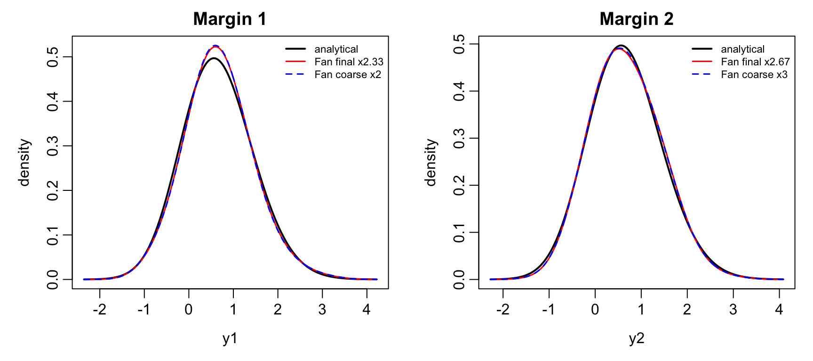
old_par <- par(mfrow = c(2, 3), mar = c(3, 2, 2, 1), mgp = c(2, 0.5, 0))
plot_fan_density_pair(fan_display$Heavy$z, fan_display$Heavy$z,
fan_display$Heavy$true_z, fan_display$Heavy$normal_density,
c("True SUN, normal scale", "Fan, normal scale"))
plot_fan_density_pair(fan_display$Heavy$u, fan_display$Heavy$u,
fan_display$Heavy$true_c, fan_display$Heavy$copula_density,
c("True copula", "Fan copula estimate"))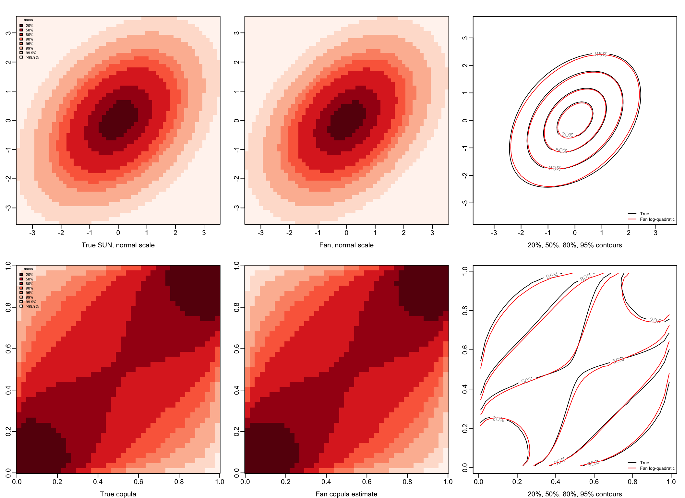
par(old_par)old_par <- par(mfrow = c(1, 3), mar = c(3, 2, 2, 1), mgp = c(2, 0.5, 0))
plot_fan_density_pair(fan_eval_x, fan_eval_y, fan_truth, fan_estimates$Heavy,
c("True SUN joint density", "Fan marginal-copula reconstruction"))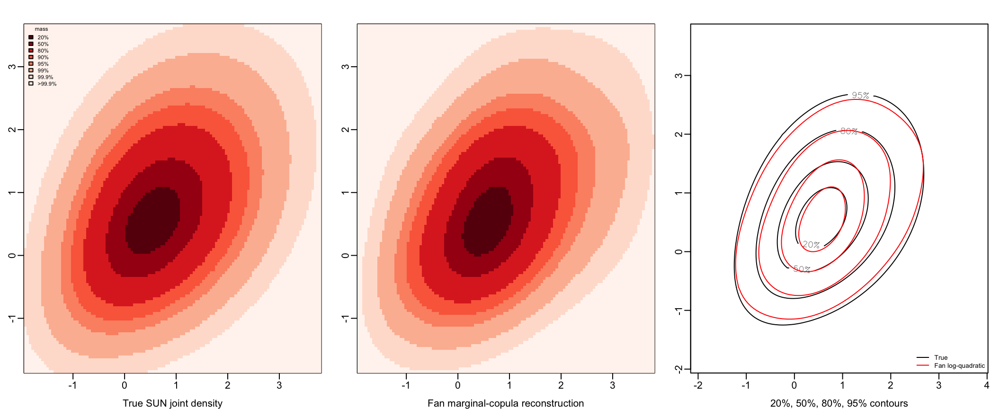
par(old_par)Intermediate censoring: Fan marginals, dependence, and reconstruction
plot_fan_marginals(fan_marginal_results$Intermediate, marg_dp, list(grid1, grid2))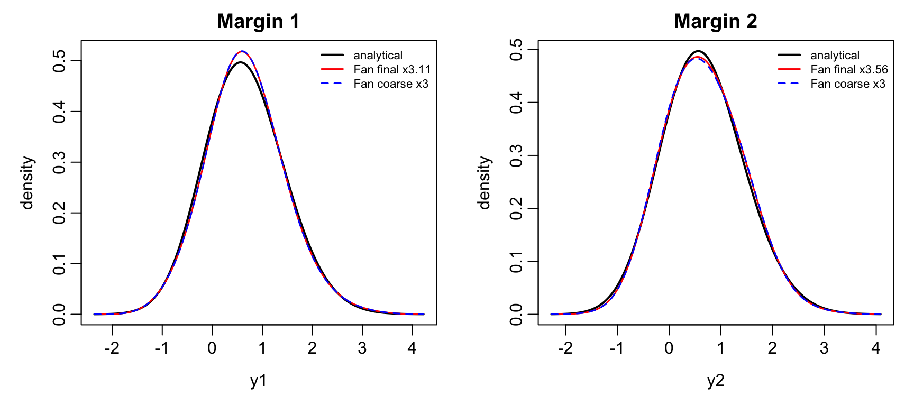
old_par <- par(mfrow = c(2, 3), mar = c(3, 2, 2, 1), mgp = c(2, 0.5, 0))
plot_fan_density_pair(fan_display$Intermediate$z, fan_display$Intermediate$z,
fan_display$Intermediate$true_z, fan_display$Intermediate$normal_density,
c("True SUN, normal scale", "Fan, normal scale"))
plot_fan_density_pair(fan_display$Intermediate$u, fan_display$Intermediate$u,
fan_display$Intermediate$true_c, fan_display$Intermediate$copula_density,
c("True copula", "Fan copula estimate"))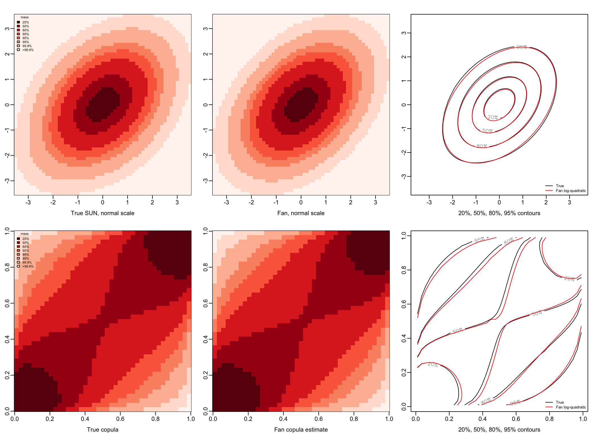
par(old_par)old_par <- par(mfrow = c(1, 3), mar = c(3, 2, 2, 1), mgp = c(2, 0.5, 0))
plot_fan_density_pair(fan_eval_x, fan_eval_y, fan_truth, fan_estimates$Intermediate,
c("True SUN joint density", "Fan marginal-copula reconstruction"))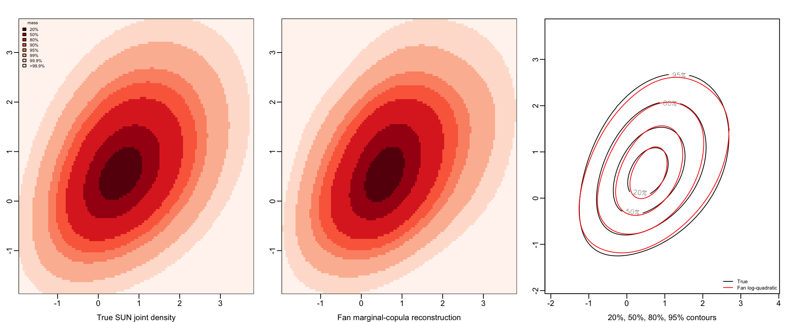
par(old_par)Light censoring: Fan marginals, dependence, and reconstruction
plot_fan_marginals(fan_marginal_results$Light, marg_dp_light, list(grid1, grid2))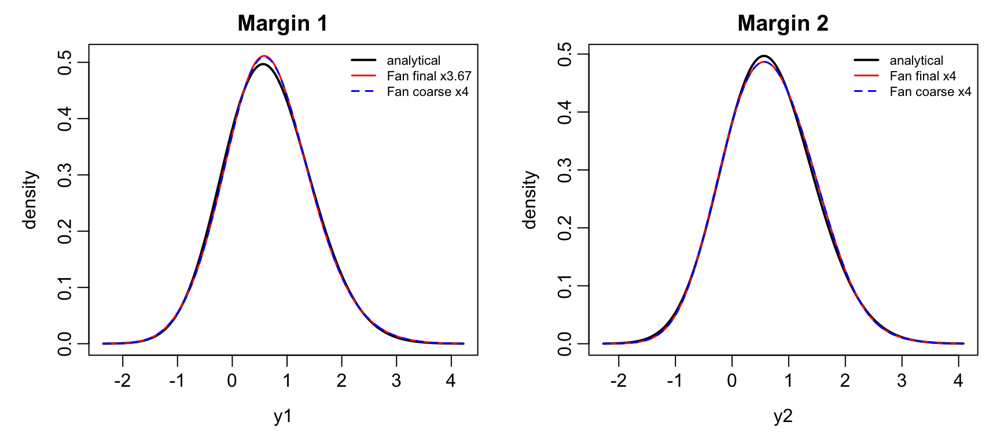
old_par <- par(mfrow = c(2, 3), mar = c(3, 2, 2, 1), mgp = c(2, 0.5, 0))
plot_fan_density_pair(fan_display$Light$z, fan_display$Light$z,
fan_display$Light$true_z, fan_display$Light$normal_density,
c("True SUN, normal scale", "Fan, normal scale"))
plot_fan_density_pair(fan_display$Light$u, fan_display$Light$u,
fan_display$Light$true_c, fan_display$Light$copula_density,
c("True copula", "Fan copula estimate"))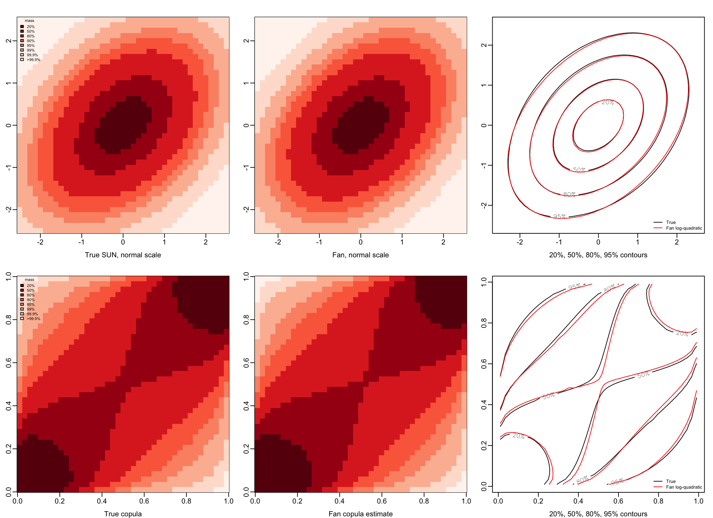
par(old_par)old_par <- par(mfrow = c(1, 3), mar = c(3, 2, 2, 1), mgp = c(2, 0.5, 0))
plot_fan_density_pair(fan_eval_x, fan_eval_y, fan_truth, fan_estimates$Light,
c("True SUN joint density", "Fan marginal-copula reconstruction"))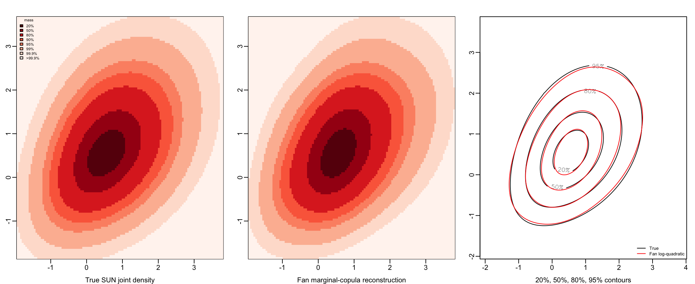
par(old_par)Computational techniques
The reported fits use a Gaussian kernel with \(\rho=0\) and separate bandwidths \(\sigma_1\) and \(\sigma_2\) constrained by the normal-score pilot ratio. The techniques below reduce the work needed to evaluate the discretized local-EM updates on the chosen grids. Matrix reuse, cumulative sums, and removal of exactly zero source contributions preserve those updates up to floating-point rounding; the existing quadrature and numerical tolerances are retained.
Common grids and reusable kernel integrals
For CV, each marginal partition is constructed once from all observed endpoints, and the copula partition once from all transformed interval endpoints. Every fold uses that common partition and its quadrature locations. For each marginal bandwidth or copula bandwidth pair, the kernel moment matrices are built once and reused across folds; the E-step and local fitting use only the training observations of that fold. Only one candidate’s matrices are retained at a time. The same marginal grid is used in both the coarse and refined search; a candidate repeated in a later stage is evaluated again.
The matrices depend on the bandwidth, source-cell boundaries, and target quadrature points, so they also remain fixed throughout the EM iterations. The source-cell kernel integrals are calculated once. The conditional cell density changes at every iteration, and the fitted density must therefore be recomputed and integrated over the target cells again. Fixed quadrature nodes and weights can be reused for that integration.
Computing the E-step with cumulative sums
Let \(Q_{jk}\), \(j=1,\ldots,I\), \(k=1,\ldots,J\), be the normal-score grid cells, and let \(p_{jk}^{(r)}\) be their current probabilities, the bivariate counterparts of \(\Lambda_\ell^{(r)}\) above. There are \(L=IJ\) cells and \(n\) observed rectangles. Since the grid includes every observed endpoint, rectangle \(i\) contains exactly the cells
\[ \mathcal R_i=\{(j,k):a_i\leq j\leq b_i,\ c_i\leq k\leq d_i\}. \]
Its probability and conditional allocation are
\[ P_i^{(r)}=\sum_{(j,k)\in\mathcal R_i}p_{jk}^{(r)},\qquad \Pr(Q_{jk}\mid\mathcal R_i,p^{(r)}) =\frac{p_{jk}^{(r)}}{P_i^{(r)}}\mathbf1\{(j,k)\in\mathcal R_i\}. \]
The direct calculation sums over cells separately for each observation. The cumulative-sum calculation obtains the same allocation with two cumulative-sum tables.
First, construct the padded prefix-sum table
\[ C_{jk}^{(r)}=\sum_{u=1}^j\sum_{v=1}^k p_{uv}^{(r)},\qquad C_{0k}^{(r)}=C_{j0}^{(r)}=0. \]
Each rectangle probability then needs only four table entries:
\[ P_i^{(r)} =C_{b_i,d_i}^{(r)}-C_{a_i-1,d_i}^{(r)} -C_{b_i,c_i-1}^{(r)}+C_{a_i-1,c_i-1}^{(r)}. \]
Second, set \(w_i^{(r)}=1/P_i^{(r)}\) and initialize a zero difference array \(H\) of size \((I+1)\times(J+1)\). Each rectangle contributes four signed corner updates:
\[ \begin{aligned} H_{a_i,c_i}&\leftarrow H_{a_i,c_i}+w_i^{(r)}, & H_{b_i+1,c_i}&\leftarrow H_{b_i+1,c_i}-w_i^{(r)},\\ H_{a_i,d_i+1}&\leftarrow H_{a_i,d_i+1}-w_i^{(r)}, & H_{b_i+1,d_i+1}&\leftarrow H_{b_i+1,d_i+1}+w_i^{(r)}. \end{aligned} \]
Contributions at repeated corners are added together. Cumulative sums along both axes recover, for every cell, the sum of weights of all rectangles containing it:
\[ W_{jk}^{(r)}=\sum_{u=1}^j\sum_{v=1}^k H_{uv} =\sum_{i=1}^n w_i^{(r)}\mathbf1\{(j,k)\in\mathcal R_i\}. \]
Thus the conditional cell mass used by the local fit is
\[ M_{jk}^{(r)} =\frac{p_{jk}^{(r)}W_{jk}^{(r)}}{n} =\frac1n\sum_{i=1}^n \frac{p_{jk}^{(r)}\mathbf1\{(j,k)\in\mathcal R_i\}}{P_i^{(r)}}, \qquad q^{(r)}(u)=\frac{M_{jk}^{(r)}}{|Q_{jk}|}\quad(u\in Q_{jk}). \]
This is the same conditional allocation as the dense matrix products. The four-corner construction uses cell masses, so it also applies to irregular grids; cell areas enter only when converting masses to the piecewise constant density \(q^{(r)}\). The corner indices are prepared once, while \(C^{(r)}\), \(P_i^{(r)}\), \(H\), and \(W^{(r)}\) are recalculated at every iteration because the cell probabilities change. The implementation accumulates duplicate corner contributions and directly sums positive terms when subtraction would cause excessive cancellation in a rectangle probability or cell weight.
Building the two cumulative-sum tables costs \(O(L)\), and reading and updating the corners costs \(O(n)\). The E-step therefore costs \(O(n+L)\) per iteration, excluding numerical fallback work, instead of the dense calculation’s \(O(nL)\). It also avoids storing the observation-by-axis incidence matrices. Conditional allocation followed by division by \(n\) includes the ordinary unsmoothed M update in Fan’s EMS decomposition. The subsequent local log-quadratic fit and integration retain the same formulas.
The marginal E-step uses the corresponding one-dimensional prefix sums and interval difference array.
Gaussian local moments and zero-cell compression
With the current product Gaussian kernel (\(\rho=0\)), separability reduces the six local moments to matrix products along the two axes. Write \(F_{jk}^{(r)}=M_{jk}^{(r)}/|Q_{jk}|\) for the posterior cell-density matrix. Let \(A_a\) and \(B_b\) contain the source-cell integrals of the one-dimensional Gaussian kernel times the standardized coordinate raised to powers \(a,b\in\{0,1,2\}\), along the first and second axes respectively. Rows correspond to target locations and columns to source cells. The moment matrices are
\[ S_{ab}^{(r)}=A_a F^{(r)}B_b^\top, \qquad (a,b)\in\{(0,0),(1,0),(0,1),(2,0),(1,1),(0,2)\}. \]
Source cells outside every training censoring rectangle receive exactly zero posterior mass. Let \(\mathcal I\) contain the source rows covered by at least one training rectangle, and \(\mathcal J\) the corresponding source columns. These sets are computed once per fit or CV fold, and the local moments use
\[ S_{ab}^{(r)} =A_a[:,\mathcal I]F^{(r)}[\mathcal I,\mathcal J]B_b[:,\mathcal J]^\top. \]
The fixed kernel matrices are sliced once per fold. This removes entirely uncovered source rows and columns; individual zero cells inside the retained submatrix remain in the products. Only source columns of the kernel matrices are removed: every target quadrature point, cell boundary, cell volume, and E-step probability remains on the original full grid. A source cell’s small positive probability is never a reason to drop it. Since all omitted source contributions are exactly zero, this reduces the matrix multiplication sizes while retaining the same estimator and numerical integration rules, up to floating-point rounding. The shared full-data matrices are kept unchanged for reuse by the other folds.
Combined C++ local fit and cell integration
The product-Gaussian moment products and analytic local fit are evaluated together using RcppEigen. At each iteration, Eigen computes three reusable left products, then the six required right multiplications. It reads the supplied R double matrices without copying the inputs and keeps the six moments in C++. The same call computes the local mean, covariance, determinant, Mahalanobis term, and fitted log-density; only the log-density matrix returns to R. The routine is compiled or loaded once during setup.
At each target location, the Gaussian local-quadratic calculation with \(\rho=0\) is
\[ \mu=\frac{1}{S_{00}}\begin{pmatrix}S_{10}\\S_{01}\end{pmatrix}, \qquad V=\frac{1}{S_{00}} \begin{pmatrix}S_{20}&S_{11}\\S_{11}&S_{02}\end{pmatrix}-\mu\mu^\top, \]
\[ \log g_{\mathrm{raw}}(s) =\log S_{00}(s)-\frac12\log\det V(s) -\frac12\mu(s)^\top V(s)^{-1}\mu(s). \]
The global tail rule is unchanged: a target is active only if \(S_{00}(s)>\texttt{tail\_tol}\max_v S_{00}(v)\) and \(S_{00}(s)>0\). Inactive targets return \(-\infty\) on the log scale. The same finite-moment and positive-definite covariance checks remain in place. For \(\rho=0\), the combined C++ call removes the transfer of six moment matrices to R and the temporary R vectors used for the analytic fit. It retains double precision, the Gaussian kernel, and the full quadratic interaction term. Exponentiation and cell integration follow the local fit.
The local quadratic maximizer is obtained analytically; there is no inner optimization loop at each target location. The outer EM iterations still update the conditional probabilities and repeat the local fit. The full quadratic interaction moment \(S_{11}\) is retained, allowing a dependent fitted density even though the smoothing kernel has \(\rho=0\).
Exponentiation, target-cell integration, and normalization remain in R. Before exponentiation, the largest fitted log-density is subtracted to avoid numerical overflow; normalization cancels this common scale factor. Two Gauss–Legendre points per axis, or four points per bivariate cell, provide the new cell masses on the full grid. The iteration stops when the sum of absolute changes in cell probabilities is below the specified tolerance, or the iteration limit is reached.
Computational time
The fits enable timing = TRUE. CV is enabled. For each censoring case, marginal time covers both marginal bandwidth searches, including refinement; copula time covers the separate bivariate bandwidth search. Each time includes kernel matrix construction and all EM updates, with shared matrices counted once per candidate. Grid preparation, held-out scoring, final refits, C++ setup, smooth-model evaluation, and plotting are excluded. Cached fits retain the timings from the run that produced them.
One CV iteration means fitting one bandwidth candidate on one training fold. The average is the corresponding fitting time divided by the number of these fits, so shared matrix construction is amortized across folds.
The table reports elapsed fitting time for the completed run of this optimized implementation, in seconds.
| Censoring | Marginal time (s) | Marginal fits | Marginal average (s/fit) | Copula time (s) | Copula fits | Copula average (s/fit) |
|---|---|---|---|---|---|---|
| Heavy | 5.331 | 340 | 0.016 | 175.820 | 20 | 8.791 |
| Intermediate | 2.599 | 340 | 0.008 | 111.693 | 20 | 5.585 |
| Light | 1.726 | 340 | 0.005 | 67.546 | 20 | 3.377 |